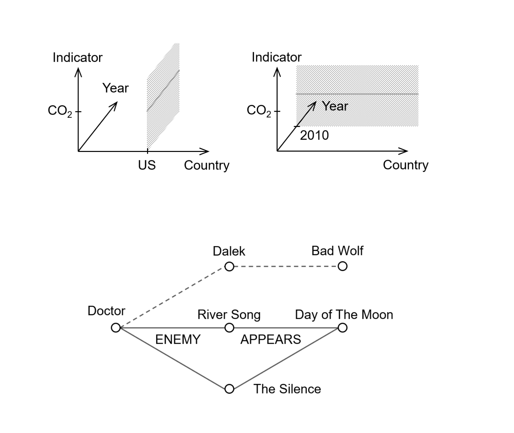
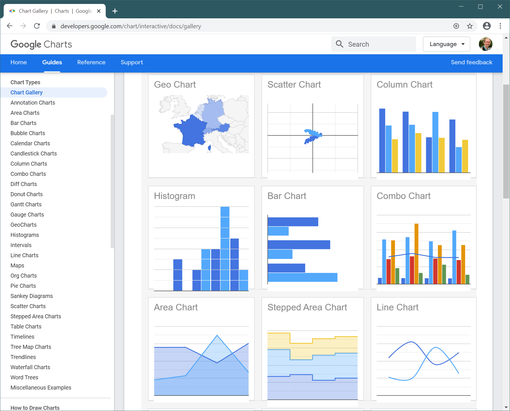
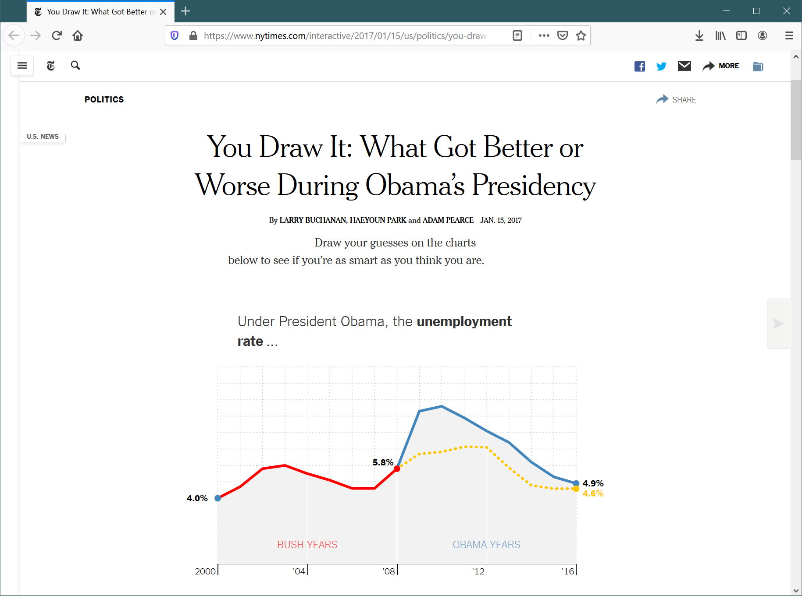

The Gamma and Compost.js
Towards simple and open data visualization tools
Tomas Petricek, Charles University

Data journalism
Visualizations tell powerful stories
But EXTREMEly hard to develop
Can we make it easier?
Advancing the state of the art
- Can be understood by the reader
- Can be created by non-experts
- Keep the reproducibility of code
- Offer flexibility for experts
The Gamma
Data exploration for non-programmers
The Gamma
Language that understands data
- Dot-driven - Recognition over recall
- Complete & correct - Options based on data
- User-centric - Ideas from spreadsheets
- Extensible - Can add other data

Type providers
Map data into The Gamma system
Data cubes
Gradual slicing
of dimensions
Graph data
Path patterns
with holes
Compost.js
Composable charting abstractions

What is a chart?
A very long list...
Bar chart
Column chart
Line chart
Area chart
Scatter chart
Histogram
Combo chart???
What is a chart?
Uh...
Maybe chart is just an SVG graphics with text, shapes and pixel coordinates?
What is a chart?
D3 is a too low-level answer
x = d3.scaleLinear([0, m - 1], [0, width])
y = d3.scaleLinear([0, 1], [height, 0])
z = d3.interpolateCool
d3.area().x((d, i) => x(i)).y0(d => y(d[0])).y1(d => y(d[1]))
Google Charts is a too high-level answer
var options = {
vAxis: {title: 'Cups'}, hAxis: {title: 'Month'},
seriesType: 'bars', series: {5: {type: 'line'}} };
chart.draw(data, options);

What is a chart?
Also interactivity!
A chart where the reader has to make a guess before seeing the answer.
DEMO
Creating charts with Compost.js
What is a chart
Fundamentals of a chart
- Projections from domain values to pixels
- Shapes such as areas and lines
- Composition of multiple shapes and text
- Interactivity state depends on user input
DEMO
You Guess charts in The Gamma
ExtremeXP
Possible research directions?
ExtremeXP
Possible research directions
- Exposing Extreme data in The Gamma?
- Using "You Guess" in experiment modelling?
- Quick chart prototyping with Compost.js?
- Using LLMs to write Compost or Gamma code?
Thank you!
Tomas Petricek, Charles University
References
Project home pages
- Compost.js library - https://compostjs.github.io
- The Gamma home page - https://thegamma.net
- The Gamma demos - https://turing.thegamma.net/
Relevant papers
- Petricek, T. (2020) The Gamma: Programmatic Data Exploration for Non-programmers. IEEE VL/HCC
- Petricek, T. (2021) Composable data visualizations. JFP 31: e13.
- Petricek, T. (2017) Data exploration through dot-driven development. European Conference on Object-Oriented Programming (ECOOP)
References
Other possibly relevant work
- Petricek, T., et al. (2022) AI Assistants: A Framework for Semi-Automated Data Wrangling. IEEE TKDE (2022).
- Perera, R., et al. (2022) Linked visualisations via Galois dependencies. Proceedings of the ACM on PL 6. POPL (2022): 1-29.
- Petricek, T., Geddes, F., and Sutton, C. (2018) Wrattler: Reproducible, live and polyglot notebooks. USENIX TaPP.
- Petricek, T., Guerra, G, and Syme, D. (2016) Types from Data: Making Structured Data First-class Citizens in F. Proceedings of PLDI 2016: 477-490.